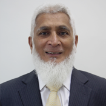
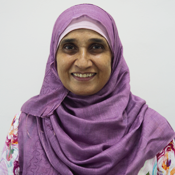
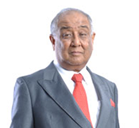
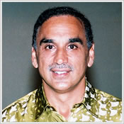
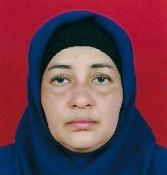

FOUNDER AND DIRECTOR - Abdul Rehman Dakri
It has been a long time dream for Abdul Rehman Dakri and his wife Mehrunessa to establish an orphanage for the poor and needy children once they retire. Finally, after visiting a few countries, by the grace of Allah, they decided to make Malaysia their home. In England, Abdul Rehman was very active in community work and was an active volunteer for Garden of Peace, a charity organisation in Ilford, East London which established and managed a cemetery for the Muslims (www.garden-of-peace.org.uk). To realise their dream, Our Home : Rumah Aman was registered with the Charity Commission for England and Wales in March 2004. The name Rumah Aman which means Peaceful Home was researched by a friend in England. Rumah Aman (Shah Alam) Berhad, a company limited by guarantee was then registered with the Companies Commission of Malaysia in January 2005 to manage Rumah Aman Orphanage and Welfare Home which began operations in Shah Alam, Selangor in June the same year. Abdul Rehman and his wife came to Malaysia in 2003 and are now residing under the Malaysia My Second Home Programme. He envisions establishing another 13 orphanages including for girls, throughout the country. Abdul Rehman Dakri being the founder of Rumah Aman is also the director of Rumah Aman (Shah Alam) since the company's inception in January 2005.

FOUNDER - Mehrunessa Dakri
Mehrunessa Dakri is the founder of Rumah Aman. At the age of 18 years she left Malawi, Africa to marry Abdul Rehman Dakri and joined him in the textile business. Like her husband, she too had the intention of establishing an orphanage or some other institution which will be able to help the poor and the needy moreover she is very concern about the upbringing of children, their well being and education needs.

DIRECTOR - Tan Sri FD Mansor
Tan Sri Dato' Mohamed Mansor bin Fateh Din is one of the founders of Glomac Berhad. Presently he is its Group Executive Chairman/Chief Executive Officer. His dedication, commitment and vision continue to produce the inspiration for the Glomac Group. He was chosen as Selangor's Entrepreneur of the Year 1995 and also Malaysia's Property Man of the Year 2005. He was the Honorary Secretary of the Selangor Malay Chamber of Commerce and Industry and until today he is still active in social work. Tan Sri FD Mansor is a Director of Rumah Aman (Shah Alam) since September 2006.

DIRECTOR - Ismail Ahmed Dakri
Ismail Ahmed Dakri joined A. Dakri Co. Ltd, a family concern, as a salesman after completing secondary school at the age of 18 years old. Over the years, he rose to become the sales director of A. Dakri Co. Ltd. which was producing fabric and garments. When the company closed after being in operations for 42 years, he and his older brother, Abdul Rehman came to Malaysia in 2003. While his brother founded an orphanage, Ismail was executive director of Eurostructures Sdn. Bhd., producing plastic bags and plastic products for export to the United Kingdom. He is also a director of Vista Magic Sdn. Bhd. exporting Malaysian halal food to United Kingdom. Ismail Ahmed Dakri has been a director of Rumah Aman (Shah Alam) since its inception in January 2005.

DIRECTOR - Dato' Norhani Saad
Dato' Norhani Saad is an entrepreneur and has vast working experience in the corporate world mainly in product development. She is currently active in promoting Islamic education programs and is a partner of an Integrated Islamic School in Kuala Lumpur. She is also pursuing opportunities to enhance the income of single mothers through cottage industries and small medium enterprise. Dato' Norhani Saad was appointed a Director of Rumah Aman (Shah Alam) on 7 September 2011.